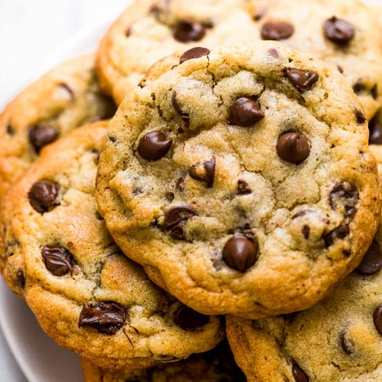

Chocolate Chip Cookies

Ingredients
Instructions
- Preheat oven to 375 degrees
- Combine flour, baking soda and salt in small bowl. Beat butter, granulated sugar, brown sugar and vanilla extract in large mixer bowl until creamy. Add eggs, one at a time, beating well after each addition. Gradually beat in flour mixture. Stir in morsels and nuts. Drop by rounded tablespoon onto ungreased baking sheets.
- Bake 9-11 minutes
- Cool on baking sheets for 2 minutes; remove to wire racks to cool completely.